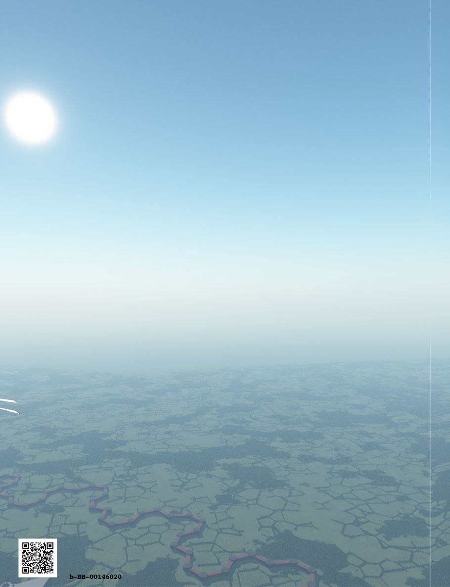

| ファンタジー世界構築のための質問リスト④: 商業、貿易、公的生活編 (RasenWorks) | |
| 神楽坂らせん | |
| RasenWorks (2016) | |
Patricia C. Wredeによる"Fantasy Worldbuilding Questions" http://www.sfwa.org/tag/world-building/ の日本語訳です。
月刊群雛2014年08月号～2015年02月号まで全５回連載された「異世界構築質問リスト」をまとめました。
───────────────────────
はじめに
この質問リストは、自らの創作物語のために、現実感あふれる架空の世界観を構築しようという、ファンタジー作家の試みを支援するものです。
数多くの質問リストの中から、今回は「商業、貿易、公的生活」に関する質問をピックアップしました。
原文では、いくつかの質問が複数の項目に併記されています。この和訳版の質問リストでは可読性を重視し、本項での初出の質問のみ残しました。重複する質問については初出の参照先を明記してありますので、そちらをご覧ください。その他、この原稿に掲載できなかった質問については、『月刊群雛』やシリーズ別巻、または『ファンタジー世界構築のための質問リスト〈完全版〉』をご参照ください。
これらの質問の多くは、ある物語にとっては参考になったり不可欠であったりしますが、すべての物語の条件・状況に適合できるほど万能なものではありません。小説を書き始める（もしくは書き終える）ために必要な全ての、あるいはいくつかの質問に、作家が必ず答えなければならないというものでもありません。
矛盾のない......あるいは、つじつまが合わない世界観と背景とは、どのようなものなのかと、作家に考えていただこうという発想から、この質問リストをご用意いたしました。お役に立ちそうならば、どうぞご活用ください。そうでなければ、そっと閉じてください。
この質問リストは、網羅的なものでも最終的なものでもありません。しかし、作家一人ひとりが個々の架空世界についてリストをまとめようとする場合の、きっかけにはなるでしょう。
【異世界構築質問リスト】
●商業、貿易、公的生活
［Ａ 一般］
（１）伝統的な同盟国は、どの国・種族ですか？ 伝統的なライバルは、どこですか？ どのように、こうした伝統は、国と種族の現代の関係に影響を及ぼしていますか？ → 社会組織Ｅ（５）へ
（２）同言語を話さない国々の間で商取引を促進する「貿易言語」はありますか？ ラテン語や中世にあったように、教育を受けた者か、貴族が話した「ユニバーサルランゲージ」はありますか？ → 物理的および歴史的特長Ｄ（11）へ
（３）この国は何を輸出入していますか？ 貿易は国の経済にとってどのくらい重要ですか？ どのように外貨両替を扱いますか？ 誰によって？ どのような貨幣のシステムがあり、誰がそれを造幣しますか？ → 物理的および歴史的特徴Ｅ（10）へ
（４）なぜ人々は最初にこの国に定住したのでしょうか？ 戦略的な位置や貿易ルート、水輸送、鉱物、良い農業等のためですか？ それらの事態はその後大きくかわりましたか？ （訳注：資源の枯渇等。それにより人々は移住した？）それとも、人々は移動せず、依然として最初の場所で定住し始めた何らかの理由に依存し続けていますか？ → 物理的および歴史的特徴Ｅ（２）へ
（５）他の国々に対する公式の姿勢はどれほど通商と貿易に影響しますか？ 商人は、利益を得ることができる限り政府の間の緊迫した対立を無視しますか？ それとも、重要な問題として影響を受けるでしょうか？ 国境検問所に税関検査官または同等の者がいますか？ いくつかの技術・魔法・商品の輸出入は、政府、あるいは民間のカルテルによって規制されますか？ これは、国々の政治的な関係にどのように影響しますか？ → 社会組織Ｅ（３）へ
［Ｂ ビジネスと産業］
（１）ビジネスはどのように組織されていますか？ 労働組合がありますか？ ギルド構造は存在しますか？ マルチステート企業や国際カルテルは？
（２）人々が持つ技能は、クロスオーバーすることができますか？ つまり、２つ以上の異なる資質を学習するか習得することができるでしょうか？ 異なるクラスの技術でモノを作ることはギルドや大君主からの許認可が必要ですか？ それとも、それは法律によって自動的に保証されますか？ 技術制限はどれくらい厳密でしょうか？ 大工は家を建てることを認められた唯一の人々ですか？
（３）どんなタイプの商売が、村や小さな町で見受けられますか？ 中型の町や大都会ではどうですか？
（４）通貨と貨幣は標準化されていますか？ それとも、両替商のような交換のシステムがありますか？ 典型的な名称は何ですか？ 旅を続けていく可能性が高い旅行者や商人が持つ通貨はどのようなタイプですか？ 主要な貨幣以外のコインは何と呼ばれ、それらはどのような価値がありますか？
（５）刀鍛冶や織物等のような産業プロセスは「企業秘密」と考えられますか、それとも、それらは周知の事実ですか？
（６）技術か商売を学ぶために若い人が経るプロセスは何ですか？ 徒弟制度ですか？ 四年間の大学でしょうか？ 各プロセスに必要な条件は、標準化された様々な技術ランク（初心者、学生、インターン、ベテラン職人、マスター、医者、専門家等）向けですか？ それとも、技術上のランクよりも名匠の好意に依存しますか？
（７）例えばダマスカス鋼やボルドーワイン、中国の絹、ウィスコンシン・チーズのように、さまざまな地方や都市で、特定の技術、プロセスあるいは製品を名産としたり専門としたりしているでしょうか？ 異種族ではどうでしょうか？
（８）政府や統治者は、商習慣に対してなんらかの規則や規制を科していますか？ 独占禁止法や汚染防止法はありますか？ 度量衡の標準化されたシステムがありますか？ それとも商人は「１ヨーク・ブッシェル」のかわりに毎回「１ロンドン・ブッシェル」等と指定しなければなりませんか？（訳注：ブッシェルは穀物の単位、１枡で約35リットル。かつてヨークとロンドンでは別の大きさの枡で量られていた） 異なっているシステムは、どのように輸送と取引に影響を及ぼしますか？
（９）新しい産業は発展していますか？ それらは伝統的な古い産業と競争していますか？ いつかそれらを時代遅れにしてしまうでしょうか？
（10）商売の記録や個人的な記録はどのように残されますか？ タリースティック？（訳注：ヘンリー１世の頃の木片貨幣、木片の刻印で取引額を表す） 羊皮紙？ 粘土板？ ビーズ？ それとも、光磁気記録メモリー？
（11）商人クラスがありますか？ それは、社会のどの位置におさまりますか？ 商人ギルドがありますか？ あるならばどのように組織されますか？ それは、貿易をコントロールするためにどれだけの力を持っていますか？ ギルドの中でどれだけの内部抗争がありますか？
（12）例えばハンザ同盟（訳注：中世後期にドイツ諸都市が結成した経済的同盟体。ハンザとは元来「商人仲間」の意味）のような国を越えた貿易の組織がありますか？ 彼らは各地域でどのような存在感を持っているのですか？
（13）この世界経済はお金を基盤とする経済ですか？ それとも物々交換や他の基盤を持っていますか？
（14）どんな商品が、一般に小さな町の市場で入手可能ですか？ 大きな街や大都市ではどうでしょうか？ どのような商品が市場で扱われていますか？
（15）どのような産業が重要ですか？ 鉱業、漁業、造船、木材、農業、製造業等。どの地域で？ それらは、例えば造船に木材が、織物に羊毛が必要なように、他の地域からの材料に依存しますか？ 供給が中断された場合、何が起こるでしょうか？
（16）誰が造幣を担当しますか？ 統治者、地元の男爵、貿易ギルド等？ 一般に許容できる標準（訳注：貨幣と捉えられる基準のこと？ それとも基準通貨のことか？）がありますか？ 偽造は、どれくらい簡単で一般的ですか？ → 社会組織Ｂ（13）へ
（17）正規の輸出入以外にどれくらいの密輸がありますか？ 何をどの程度の量と頻度で、どこからどこに？
［Ｃ 交通・通信］
（１）社会の様々なレベルでの輸送に使用される一般的な家畜は何ですか？ 例えば、雄牛、馬、ロバ、ラクダ、その他。
（２）テレポート呪文や魔法のカーペット、ドラゴン乗り等の魔法の交通・輸送手段がありますか？ 彼らはどのように非魔法の移動手段に対してスピード、安全性、費用で対抗するのですか？（例えば、急患をテレポートさせる等） 魔法の旅に欠点はあるでしょうか？（何らかのコストが恐ろしく必要等な） 一般的にどのような目的で使用しますか？（楽しみのための旅行？ 工場からの出荷のため？） → 魔法と魔術師Ｃ（１）へ
（３）市内の短距離を移動するための手段は何ですか？ 人々は、タクシー、輿、人力車を雇うことができますか？ または自分で歩くか、召使いや馬に頼らなければならないでしょうか？
（４）人々は遠くの相手へどのようにしてメッセージを送りますか？ 公共や個人的な郵便制度があるでしょうか？ または、重要な連絡は誰でもメッセンジャーを派遣しなければなりませんか？ どれくらい速く、ニュースは世界の果てまで到達するでしょうか？
（５）水上運送は、どれくらい利用されますか？ それは信頼できる方法ですか？ それとも危険な方法だったり、とても高価な方法ですか？
（６）旅行は、どれくらい一般的ですか？ どの地域にせよ「世界を見る」という観光旅行のコンセプトは存在していますか？ 旅行は、どれくらい危険ですか？ どれくらい大きなグループならば安全であると思われますか？ 主要都市の内外にどれだけ交通量がありますか？ 最高／最悪のエリアは、どの地域ですか？
（７）地上を長距離移動する最速の手段は何ですか？ 水上では？ 最も安全なのはどの方法ですか？
（８）交通機関はどのようなものがありますか？ 舗装道路や高速道路などの整備された道はありますか？ 誰がそれを敷設し、誰がそれを維持する責任がありますか？
（９）旅行者は夜間どこに宿泊しますか？ 宿を支えるのに十分な旅行者がいますか？ または、人々は中世の修道院相当の場所に泊まらなければなりませんか？
（10）人々の常識として、奴隷、農民等、いくつかの階級は生まれた土地から全く移動しないと考えられていますか？ 使者、メッセンジャー等の階級は絶えず移動すると考えられていますか？
（11）人々は、世界でいったい何が起こっているか、どのように情報を入手しますか？ 噂、町の触れ役、新聞、テレビおよびラジオ？ どのように偏向したニュースの意味を知ることが出来ますか？ そしてどんな方向に偏向していますか？ 報道・出版の自由がありますか？ そうでなければ誰が情報をコントロールしますか？ 検閲官？ どんな手段によって？
（12）どんな本が生産されますか？ それらは同一の内容でしょうか？ つまり、印刷機が発明されていますか？ または希少で高価な手書きのものでしょうか？ 後者の場合は、誰がそれらを写本するための時間とスキルを持っていますか？
（13）どこかに偉大な図書館（本／巻物／原稿のコレクション）は、ありますか？ 学者、ウィザード、一般市民は、どれくらいそこに近づきやすいですか？ 誰が運営し、誰が彼らを支えますか？
［Ｄ 科学技術］
（１）この社会のテクノロジーのレベルはどのくらいでしょうか？ 古代ローマ、中世、ルネッサンス、産業革命に相当しますか？
（２）車輪、火薬、印刷、水洗式トイレなど、どのような重要な発明や進歩がなされましたか？ そのうちどれが平均的な人の日常生活に影響を及ぼす状態にまでになりましたか？ それとも、水洗式トイレは貴族のためだけにある贅沢でしょうか？
（３）我々の地球と同様に進歩したと考えて、技術開発のこの段階で見ることを期待できる発明や進歩がまだなされていないようなことがあるでしょうか？ それは何ですか？ それともこれから作られようとしていますか？
（４）自然の法則、物理、魔法についてどれだけ知られていますか？ 例えば、現代の尺度では間違っていたものの、何世紀にもわたって受け入れられていた人体解剖に関するアリストテレスの思想等のように、どのくらい一般的に知られていることは間違っているでしょうか？ → 魔法と魔術師Ａ（11）へ
（５）自然と物理学の法則は、この世界では実際の地球と異なっていますか？ それとも同じですか？ どのように魔法が世界に効いていますか？ 魔法の獣（モンスター）はどのような存在ですか？ → ワールドＡ（１）へ
（６）どこで科学や魔法の研究が行われていますか？ 大学、民間の研究室？ 統治者／政府等の支援のもとでですか？ → 魔法と魔術師Ｄ（10）へ
（７）魔法が科学技術を置き換えてしまうため、どのような分野でその開発・発展を抑える可能性がありますか？ 例えば、食品の冷たさを保つ呪文が簡単かつ安価であれば、冷蔵庫を発明する必要はありません。どのような分野では魔法が原因で科学技術が急速に発展する可能性があるでしょうか？ 例えば、魔法のクリスタルボールを見た者が、通常よりも早くレンズや望遠鏡の発明を考えつくかもしれません。
［Ｅ 医療］
（１）死と埋葬にはどのような習慣がありますか？ 死体を扱う人（医師、聖職者、葬儀屋、不可触民）の特別なクラスはありますか？ 魂を空に飛ばすため髪を燃やす、ゾンビ化を防ぐために体を燃やす、船頭のために（訳注：三途の川の？）目にコインを挟む、等の事が行われますか？ なぜそうしなければならないのでしょうか？ 死者は崇め恐れられていますか？ それとも無視されますか？ → 人々と風習Ｂ（７）へ
（２）診断のプロセスはどれくらい正確でしょうか？ ヒーラーは、同様の徴候を備えた２つの疾病を区別する方法を持っていますか？ それらは我々の持つ物理的な医学テスト（反射神経、体温、瞳孔の収縮等）に依存しますか？ それとも、彼らは通常、診断のための呪文を使うのですか？
（３）ヒーラーのサービスは、どのくらい高価ですか？ 普通の人々にこのようなサービスが利用できますか？
（４）解剖学、生理学、病理学等についてどれだけ知られていますか？ 「これが効くことは知っているが何故効くかは分からない」といった実際的経験に基づいた知識でしょうか？ それとも、治療者は自分が行っていることの原理を少しは理解していますか？
（５）ヒーラーは通常どのくらいの訓練を受けるのですか？ どこで？ 誰から？
（６）一般的に治癒魔法はありますか？ もしそうであれば、魔法のヒーリング能力はどのように機能しますか？ 魔法ヒーラーは、意識的に（解剖学等の知識の多くが必要とされるであろう）治癒のプロセスを（魔法で細かく）指示しなければならないのですか？ それとも、ヒーリング魔法は、単に患者の治癒速度をスピードアップさせるだけですか？ 医者に外科医、眼科医等が存在するように魔法ヒーラーに種類はありますか？ 魔法と非魔法のヒーラーは専門分野でのライバル？ 単純に分野の違う存在？ → 魔法と魔術師Ｄ（15）へ
（７）避妊の確実な方法はありますか？ 誰が、通常の出産を扱いますか？ 助産師や医師？ 妊娠中の女性や、出産時、母体と子供の死亡率はどのくらいですか？
（８）医療は、どの程度のレベルにありますか？ ヒーラーは何者でしょう？ 彼らはヒーリングの才能を持ちますか？ それともそのためのトレーニングをしなければなりませんか？ 誰がヒーラー、薬草師、薬剤師、外科医、魔法／非魔法の医師等を訓練しますか？
（９）ヒーラーにはどれだけのニーズありますか？ ペスト、外傷等、この社会の中にはどのくらいの病気や怪我がありますか？ そのニーズを満たすために十分なヒーラーはいるのでしょうか？
（10）治療法にはどのようなものがありますか？ 薬酒、予防接種、鍼治療、呪文等。それらはどのように効果的ですか？
（11）死亡した人の蘇生は可能ですか？ もしそうであれば、死亡後その処置が不可能になる状態はどのようなものですか？（灰になる。深刻な脳損傷等） また、自動的にそうなるにはどのくらい時間が必要でしょうか？
（12）狂気はどのように扱われますか？ 精神病院や治療センターはありますか？ それはケースバイケースで処理されますか？ 狂気の治療はどの程度有効ですか？
（13）人間と非人間の身体的な違いは、どのように彼らの治療に影響を及ぼしますか？ 非人間または人間だけがかかる病気がありますか？ 人間の軽い風邪は、ドワーフには急性肺炎を引き起こすような種族により病状の変わる病気はありますか？ また、重症度の異なる程度で、誰でもかかる風邪のような病気があるでしょうか？ 何らかの治療処置はある種族にとっては致命的であるが、他種族には効果的だったりしますか？ 医者やヒーラーは、人間以外の患者をうまく治療するためにその種の専門家とならなければなりませんか？
［Ｆ 芸術とエンターテイメント］
（１）ダンス、音楽、演劇等、この社会の芸術活動はどんな状態ですか？ アーティストは立派であると尊敬されますか？ それとも不道徳であると不信感を抱かれていますか？ 誰が芸術活動をサポートしますか？ どの芸術が最も高く評価されていますか？ その理由は？
（２）舞台芸術があり恒常的な劇場やコンサートホールがありますか？ もしそうなら、そうした場は誰が所有し、興行していますか？ 収益性は高いものでしょうか？ プレーヤー／ミュージシャン／ダンサー／劇団のツアーもありますか？ 恒常的なものとどのように異なるのでしょうか？
（３）社会の様々なレベルで人々は楽しみのために何をしますか？
（４）魔法は芸術に使用できますか？ もしそうなら、どんなものですか？ 動く写真、自動演奏フルート、光る塗料等？ 〝通常の〟芸術家はこれについてどう思っていますか？ このような純粋な魔法による芸術と、錯覚・イリュージョンを利用した芸術等、別々の方向性はありますか？ → 魔法と魔術師Ｄ（19）へ
（５）鷹狩り、狩猟、スキー、野球等、どんなスポーツや気晴らしが一般的ですか？ これらにどのように技術やお金や余暇時間が必要でしょうか？
（６）魔法の職業は芸術？ あるいはただの仕事ですか？ この社会での魔術師の地位はどのようなものですか？ 彼らは悪徳弁護士や政治家、中古車のセールスマンと同等に思われていますか？ 彼らのスキルは平均作業スキルと考えられていますか？ それとも見上げるほど賞賛されていますか？ → 魔法と魔術師Ｂ（５）へ
（７）どんなゲームが一般に知られていますか？ チェス、サイコロ、ポーカー？ それらの楽しみ方は世界中の各階層で共通ですか？ それとも農民か貴族に限られていますか？ ある国や都市は、特別のゲームルールや娯楽に対する情熱や専門知識で知られていますか？
（８）製紙と印刷機は発明されましたか？ それとも、本や巻物はまだ珍しく高価な手書きの逸品ですか？
（９）どんなものが絵画と彫刻のような描写的な芸術のための適切な主題と考えられますか？ もしくはそうでないものはどんなものでしょうか？ 例えばいくつかの文化や宗教では、人間の姿の絵画あるいは彫刻を禁止し、抽象美術を推奨しています。中には宗教的な〝高揚〟作品に限り画家に描くことを許した宗教・文化もありました。
（10）自然に優秀な画家、ダンサー等になる傾向がある人間以外の人種がいますか？ 彼らは人間の芸術家に影響を及ぼしますか？
（11）ヒト以外の種族は、自分たちのゲームやレジャー、娯楽を持っていますか？ それらはどのように人間のゲームと異なるのですか？ また、どのように様々な非ヒト人種の生理機能や特定の魔法の才能を反映しているのでしょうか？
（12）特定の人種／文化が他の人種／文化よりも、いくつかの芸術で優秀と考えられていますか？ 最高のダンサー、画家、ミュージシャン、俳優等はどこから輩出されるのでしょうか？
（13）人々の美の基準は何ですか？ 絵画や彫刻？ 洋服や家具？ 現実のあなたの基準とはどのように異なりますか？（例：肥満がとても望ましく美しい形質と考える国） どのような美しさの基準が、様々な人種の身体的特徴に反映されていますか？（例：ドワーフは、背の低いほど魅力的と思うかもしれない。狼は長い歯または特定の香りに惹かれる。等） → 社会組織Ａ（７）へ
［Ｇ 建築］
（１）最も一般的な建築資材は何ですか？ なぜそれが使われますか？ 有効性ですか？ 安さや法的な要求等からでしょうか？ それには、なにか大きな欠点がありますか？ 例えば、ロンドンの大火事の原因になる等。
（２）高いビルを建てることは（合理的なコストで）可能ですか？ また、理にかなった時間で建造できますか？
（３）典型的な間取りはどのようなものがありますか？ 人々は、玄関のスペースを無駄にする余裕がありますか？ 他の部屋へつながる部屋の開口部を廊下のつながりとして持っていますか？ 建物は通常どのような形をしていますか？ 正方形、三角形、ドーム型、等？
（４）通常、一般的な家にどれだけの人数が住んでいますか？ 典型的な家はどのくらいの大きさでしょうか？
（５）下層階級、中流・上流階級のそれぞれの家の材料および外観の差はどうですか？ 例えば、彫刻、ペイント、模様、異なる建築資材の使用等、人々はどのように建物を飾りますか？ 例えば、大聖堂で主に使用される聖人像やガーゴイルの彫刻等の建物の目的に依存する装飾に違いがありますか？
（６）テクノロジーか魔法は、窓ガラスを作れるほどに進歩していますか？ 製造可能ならば、それはどれくらい高価ですか？ そうでなければ、人々は、換気と採光のために必要な窓を覆うために、何を使いますか？
（７）居住空間はどのように確保されますか？ ベッドルームはプライバシー保護のため最上階にありますか？ 一階にあるとしたら、それは便宜のためですか？ 応接室や図書室は、一般的ですか？ 家の冷暖房はどのような方法で行われますか？
（８）城や都市は最初から戦争や暴動等による軍事的な防衛を視野に入れて建築されますか？ もしくは後からそのように改築されますか？ あるいは、宮殿や壁がない町にもそのようなルールがありますか？
［Ｈ 都市要因］
（１）この国の人口は何人ですか？ 全世界の人口と比べてどうですか？ この国では、土地の人口数で、村・小さな町・大きな町・都市のように区分されていますか？ → ワールドＡ（５）へ
（２）人々は移住していますか？ 南から北、海岸から山、農村部から都市部へ、等等。それはなぜですか？ 侵略、ペスト、ゴールドラッシュ等のせい？ 移住の結果その事態は解消されましたか？ 過去の場所に残されている人々には、何が起きていますか？ → 物理的および歴史的特長Ｅ（８）へ
（３）都市レイアウトは宗教等の哲学を反映しますか？ 都市の「頭脳部分」は、中心点または最も高い位置（や建物）、あるいは最も戦略的な場所に位置していますか？ それとも、都市レイアウトに関して考慮される事項は主として実際的でしたか？ または、ほとんどの都市は「ただ成長しただけ」でしょうか？
（４）公的または私的な公園が、都市にありますか？ それはたくさん？ それとも少しだけ？
（５）都市の建物は一般に通りの四角い格子上に配置されますか、または、都市は無計画に「成長」しますか？ 通りと路地は、どれくらいの広さがありますか？
（６）各都市のランドマークは何ですか？ 興味深い地区（チャイナタウンやドワーフ村のように）はありますか？ それぞれの特徴はなんでしょうか？ 特別な名前がついていますか？
（７）どこに人々は買い物をしに行きますか？ 食べることは？ 楽しむことは？ 「観光客」のすることは？ どんな種類の品物／食物／娯楽が地方ではむずかしく、大都市においてのみ可能でしょうか？
［Ｉ 農村要因］
（１）人々は移住していますか？ 南から北、海岸から山、農村部から都市部へ、等等。それはなぜですか？ 侵略、ペスト、ゴールドラッシュ等のせい？ 移住の結果その事態は解消されましたか？ 過去の場所に残されている人々には、何が起きていますか？ → 商業、貿易、公的生活Ｈ（２）へ
（２）この社会の都市住民と農業者や食品製造業者の適切な比率はどのくらいですか？ 農業生産が魔法に基づいている場合（気象予測、制御、土地の肥沃度調整等）、どれくらい多くの都市住民は、農業支援魔法が突然停止したら餓死してしまうのですか？ → 魔法と魔術師Ｄ（11）へ
（３）農夫／農民／自作農／農奴は法律または習慣によって土地に結び付けられていますか？ それとも、行きたくなったら彼らは町や都市へ移動することができますか？ 彼らは農場と財産を所有することができますか？ それとも、農地はすべて「共有地」ですか？ もしくは農地は支配者か土地所有者から賃借されるものでしょうか？
（４）道と輸送の状況を考えると、腐ってしまう前に所定の場所にどれくらいの食物を送ることができますか？（これは都市のサイズの上限を意味します）
（５）農村部の土地は、主として農場、森林、牧草地のためのフィールド、または「荒れ地」ですか？ 多くの人々がいない辺境の地域では、道路を誰が敷設しますか？ 誰がそれを維持しますか？
（６）天候は年々どれくらい信頼できますか？ 作物生産は比較的信頼できますか？ それとも、人々は干ばつや洪水による定期的な飢きんに対処しなければならないでしょうか？
（７）壊滅的な天候は一般的にどのようなものですか？ 竜巻、ハリケーン、吹雪、稲妻、砂嵐？ どのように人々はそれに対処しますか？ 非人間はどのように対処するのですか？
（８）農業や食物生産をする地域は、どのように人間／非人間で分配されますか？ 例えば人間による農場の拡張はドラゴンや狼男が狩猟に使用する森林を浸食する等、どんな種類の衝突や競合がありそうですか？
（９）農夫や自作農は自分の土地を所有することができますか？ それとも、土地はすべて君主が所有していますか？ 君主や地主は、土地、収穫、獲物等に関するどんな種類の権利を持っていますか？ 密猟はどんな問題を引き起こしますか？
第五巻【日常生活編】へ続く
初出一覧
月刊群雛２０１４年８月号「ファンタジー世界構築のための質問リスト １」に掲載
●ワールド：基本原則／パラレルワールドの地球／地球とはまったく違う異世界
●物理的および歴史的特徴：一般／気候と地理／天然資源／世界史／特殊な国（々）の歴史
●魔術と魔術師：マジックのルール／魔術師（ウィザード）／魔法とテクノロジー／その他の魔法の質問
月刊群雛２０１４年９月号「ファンタジー世界構築のための質問リスト ２」に掲載
●人々と風習：一般／習慣・風習／食事／挨拶や会議／ジェスチャー／訪問／言語／倫理と価値観／宗教と神々／人口
月刊群雛２０１４年１１月号「異世界構築質問リスト ３」に掲載
●社会組織：一般／政府／政治／犯罪と法制度／外交／行われている戦争／兵器
月刊群雛２０１４年１２月号「異世界構築質問リスト ４」に掲載
●商業、貿易、公的生活：一般／ビジネスと産業／交通・通信／科学技術／医療／芸術とエンターテイメント／建築／都市要因／農村要因
月刊群雛２０１５年２月号「異世界構築質問リスト ５」に掲載
●日常生活／一般／ファッションと服装／マナー／ダイエット／教育／カレンダー
あとがき
本書はPatricia C. Wredeさんが1996年に発表された"Fantasy Worldbuilding Questions"の日本語版です。
発表された場所は、アメリカの創作手法やツールについて活発にやりとりされているＳＦＷＡ（サイエンス・フィクション＆ファンタジー著者協会）のWebサイトです。
最初に原文を見つけた時は、一見してあまり文章量もないし、自分に必要がありそうな部分だけ訳して使ってみたら良いかなぁ。程度の軽い気持ちだったのでした。
しかし、サイトのリンクを巡ってみると、あとからあとからどんどんとクエスチョンの波があらわれ、あっという間に広大な質問の海におぼれてしまいました。底に足もつかず、息継ぎもできない深い深い難問の海です。
世界を創ることは、自分が考えていた以上に深く、創作の海の深淵へと潜る必要があるのだと気がついた時にはもう後の祭り。あっぷあっぷで酸欠状態。脳に酸素が行き渡らない精神的潜行の苦しみが襲いかかってきたのです。でも、でも......、苦しいけれど、もう少し、もう少し、とクエスチョンの深みへ潜ってみると、いつしかこれが快感にかわってきてしまい......。ヤバイですね、クセになっちゃいました。（笑）
そんな苦しみとカイカンを、同じく創作を志す皆様に知ってもらえれば、と、日本独立作家同盟発行の『月刊群雛』で翻訳文を２０１４年８月号から不定期連載で全５回にわたって発表させていだだきました。
本書はその五回分の原稿から第四回分を再構成し、【商業、貿易、公的生活編】としてまとめたものです。
私の拙い英語力を信頼して和訳を快諾いただいた著者の Patricia C. Wrede さん、誤字脱字誤訳チェックを怒涛の勢いで行ってくださった『月刊群雛』編集チームの竹元かつみさん、晴海まどかさん、編集長の鷹野凌さん、その節はたいへんお世話になりました。残念ながら『月刊群雛』は２０１６年８月号で休刊してしまいましたが、文芸作品だけでなく、このようなツールの翻訳文も掲載してもらえた懐の深い雑誌でした。とても良い経験をさせていただきました。大いなる感謝を贈らせていただきます。
それから、急なお願いやワガママに嫌な顔ひとつせずステキでめっちゃ魅力的な表紙絵を提供してくださった米田淳一先生、とってもとってもありがとうございます！ 分冊に当たっても表紙の加工をお忙しいのに一瞬でやってくださいました。超感謝です！
なお、日本語訳のわけわからなさと読みにくさの全責任は私にあります。原文もＳＦＷＡのページで公開されていますので、変だなと思ったら原文を参照していただき、私のほうにもご一報いただければ嬉しく思います。
そして、この、ただただ質問が並んでいるだけというなんともマニアックで奇妙な本を手に取り、最後まで読んで下さった皆様、本当にありがとうございます。
２０１６年８月１日
神楽坂らせん
既刊情報
神楽坂らせんの作品
『ファンタジー世界構築のための質問リスト〈完全版〉』
アメリカファンタジー＆SF著者協会：SFWAのPatricia C. Wredeによる "Fantasy Worldbuilding Questions" の日本語訳です。
日本独立作家同盟の『月刊群雛』2014年８月号～2015年2月号まで全５回連載された「異世界構築質問リスト」をすべてまとめ、さらに独自の視点でSF向けの質問集も追記されています。
http://fwbqj.tumblr.com/
『らせん式ドラマロジー入門』
FreeMindというフリーウェアを使った、近代的らせん式小説執筆術の真髄をあますところなく大公開！
パソコンを使った執筆活動に興味がある方におすすめのロジカル小説執筆メソッド集のをボリュームたっぷりにお届け！
（プロは読まないでね！）
http://dramarogy.tumblr.com/
『yWriterで物語を書こう』
yWriter5という小説家向けのワードプロセッサがあります。
http://www.spacejock.com/yWriter5.html
このソフトを使って簡単な小説（今回は昔話に挑戦）を書く手法をまとめてみました。
おそらく本邦初の日本語解説書になるかとおもいます。
とっつきにいソフトですが、使い方がわかると大変強力な創作支援ツールです。
このツールの使い方はもちろん、小説の書き方も含めて知りたい方は是非御覧ください。
http://ywriter.tumblr.com/
『秀丸で傑作を書く！シリーズ』
不朽の名作テキストエディタ、「秀丸エディタ」を使って文章作品を書く
ノウハウを丁寧に解説した、極限までわかりやすい秀丸エディタガイドブックです。
・秀丸で傑作を書く！① 基本操作＆環境設定篇
http://hidehon1.tumblr.com/
・秀丸で傑作を書く！！② 正規表現＆アウトライン篇
http://hidehon2.tumblr.com/
『らせんのせかい』
日本独立作家同盟発行の『月刊群雛』にちょこちょこと掲載させていただいた作品たちの中から、ＳＦ作品だけを集めて短編集を作ってみました。２０１４年０６月号〜２０１６年０８月号まで、２年と２ヶ月の成長を一目で見れる作品集となっています。
http://rasenworld.tumblr.com/
『ふたりのブルべ～姉妹編』
「目的はイケメン・ゲット！」そんなちょっと（？）よこしまな理由で自転車の長距離マラソンイベント「ブルベ」に参加することに決めた早苗。 そこで出会ったのはなんと「理想の女性」だった！？
超ハイテンションノンストップ乙女ラブ＆ロングライド自転車ストーリー ここに開幕！
http://futaribrevet.tumblr.com/
ファンタジー世界構築のための質問リスト④
2016年8月1日 発行
著 者：Patricia C. Wrede著 / 神楽坂らせん訳
発 行：RasenWorks
©2015 神楽坂らせん Printed in Japan

神楽坂らせん
神楽坂で螺旋力を研究しつつ、主に作家向けのツールを整備したり翻訳したりしています。
Google+プロフィールページ：google.com/+神楽坂らせん
Google+では『本が好き』コミュニティの管理人もさせてもらっています。
https://plus.google.com/communities/105217771127890240722
